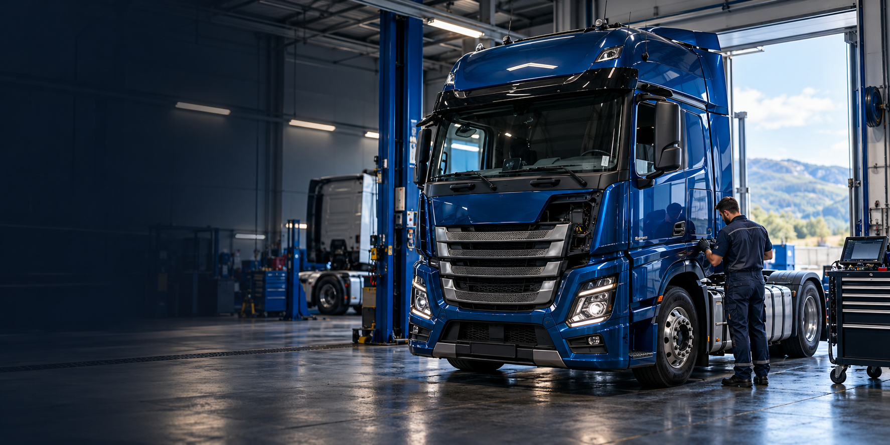
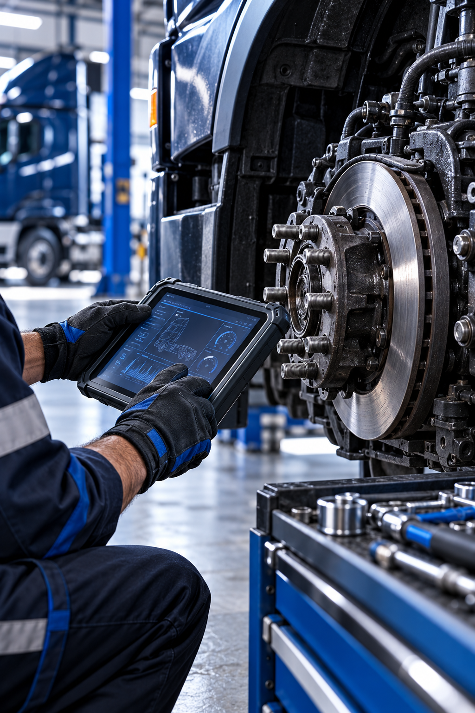

Mecánica de camiones
Revisión y reparación para el trabajo diario de tu vehículo industrial.

Taller de vehículos industriales · Irura
Atención técnica para mantener tu vehículo en marcha y tu trabajo en movimiento.
01 / INDARRA FAST TRUCK
En un vehículo industrial, cada detalle cuenta. Indarra Fast Truck nace para ofrecer una atención cercana, técnica y centrada en lo importante: que puedas volver a la carretera con tranquilidad.
Conocer el taller02 / SERVICIOS
Cuéntanos qué necesita tu vehículo. Te orientamos de forma clara antes de empezar.

TECNOLOGÍA + EXPERIENCIA
La diagnosis permite trabajar con criterio y explicarte el estado de tu vehículo de forma comprensible.
Hacer una consulta03 / CONTACTO
Llámanos o escríbenos por WhatsApp. Estamos en Irura, Gipuzkoa.